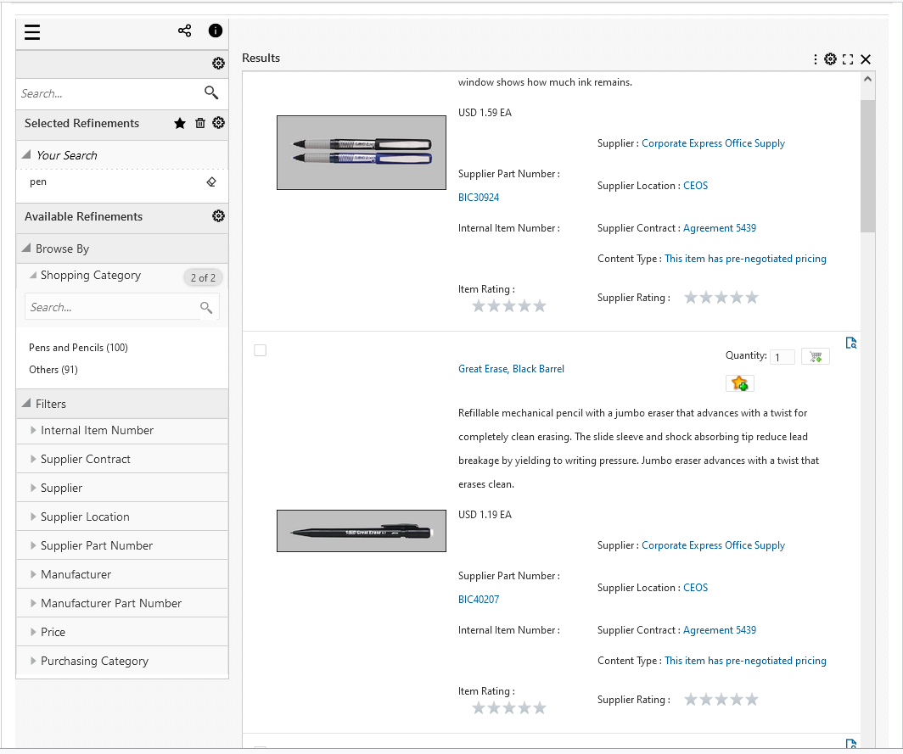
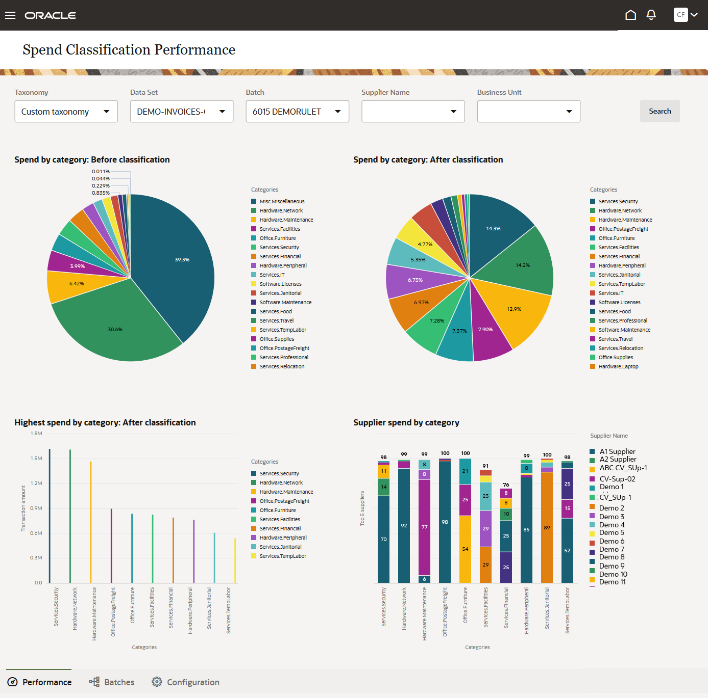
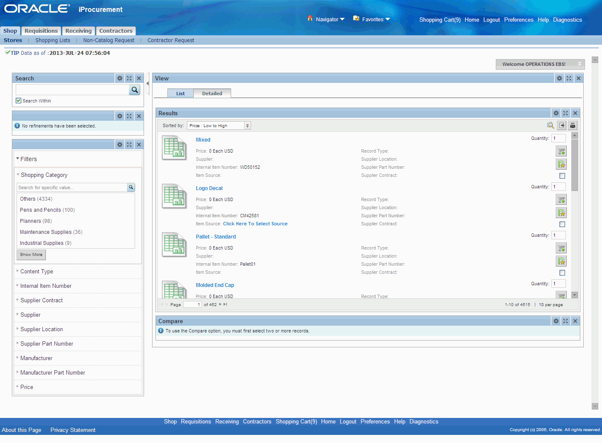

Krishnamoorthy Sethuraman
Oracle EBS, Fusion & AI Consultant
Senior Principal Consultant at Doyensys India Pvt. Ltd., specializing in Oracle EBS Procurement, Oracle Fusion Applications, Oracle Integration Cloud (OIC), Fusion Data Intelligence (FDI), and Oracle AI Agent Studio. With over 24 years at Oracle India Development Centre — progressing from Applications Engineer to Director of Software Development — I bring deep product knowledge and hands-on engineering expertise to enterprise Oracle consulting engagements.
My current focus is on AI-driven automation for Oracle Fusion customers — building AI agents using Oracle Fusion AI Agent Studio, designing OIC-based integration solutions, and delivering FDI analytics implementations. I also mentor teams on Oracle EBS ECC dashboards, OIC integrations, and AI Agent Studio capabilities.
Featured Projects
View selected projects below. More information can be found at krsethur.github.io.

TVSM — AI Agents & BDO E-Invoicing (OIC)
Led the architecture and delivery of Oracle Fusion AI Agent Studio agents for TVSM (TVS Group) — including Cash Management, Ledger, and AR Remittance Advice ingestion agents. Additionally, designed and delivered an event-driven BDO E-Invoicing (IRN generation) solution using Oracle Integration Cloud (OIC): 3-integration architecture (event listener, ESS/BIP sweep, and shared core integration) with an Autonomous Transaction Processing (ATP/ORDS) deduplication layer. Fully validated with a Postman test suite (19 assertions across 10 endpoints) and produced deployment runbook.
Petmate — Oracle EBS ECC Dashboards
Delivered Oracle EBS Enterprise Command Center (ECC) dashboards for Petmate across multiple phases. Phase 1 covered Order Management and Inventory dashboards (Receiving, Aging, Reservations, Activity, Move Orders, Transaction Management, Accuracy, Track & Trace, Space Utilization). Phase 2 delivered Financials ECC dashboards covering AR, AP, and GL. Produced user manuals, speaker-note decks, and resolved complex technical issues including ORA-01555 and flexfield compilation errors.

Oracle Fusion AI Agent Studio — Agents & Training
Built and maintained multiple Oracle Fusion AI agents including a Quote-to-PR Chat Assistant and an Autonomous Sourcing Agent. Managed the 26C upgrade impact (FILE_PROCESSOR schema changes, Business Object function naming convention changes) and restored production agents. Delivered internal AI Agent Studio training program for the Doyensys team including assessment sets and a leadership enablement deck.
AI Agent StudioBrooks — Oracle Fusion to HubSpot AR Customer Integration (OIC)
Designed and delivered an Oracle Fusion AR Customer → HubSpot integration via Oracle Integration Cloud for Brooks (via DSP/BabelQuest). Implemented a flat record design (one HubSpot Company per Account+Site, composite key) with XSLT grouping, HubSpot adapter, and FTP/SFTP handling.
Oracle Fusion Spend Classification Product
As Director at Oracle IDC, led the design and development of the Oracle Fusion Spend Classification product — classifying organizational spend using Oracle Machine Learning algorithms. Built REST services using ADFbc and developed the UI using Oracle Visual Builder Studio (Oracle JET). Gained expertise in JavaScript frameworks including Node.js, npm, grunt, ReactJS, mocha, karma, and chai.
Spend ClassificationEnterprise Command Center — iProcurement
As Senior Manager at Oracle IDC, redesigned and developed the existing iProcurement Shopping UI with ECC techstack (Oracle JET) to provide a modern search UI experience.
iProcurement ECC
EBS Endeca Extensions for iProcurement
iProcurement product in EBS was first rewritten using Endeca techstack. Coded the Clover ETL graphs for data ingestion and designed the UI using Endeca Studio.
iProcurement EndecaWork Experience
See my complete work history on LinkedIn.
Senior Principal Consultant
Doyensys India Pvt. Ltd., Chennai
May 2026 – Present
Oracle EBS, Fusion Applications, OIC, FDI, and AI Agent Studio consulting across enterprise clients.
Key contributions:
- Architected and delivered AI Agent Studio agents for TVSM (TVS Group) — Cash Management, Ledger, and AR Remittance Advice ingestion agents on Oracle Fusion.
- Designed and delivered an event-driven BDO E-Invoicing (IRN generation) solution for TVSM using OIC (3-integration architecture) with ATP/ORDS deduplication layer.
- Delivered Oracle EBS ECC dashboards for Petmate (Order Management, Inventory, and Financials phases).
- Designed Oracle Fusion AR Customer → HubSpot OIC integration for Brooks (via DSP).
- Led internal Oracle AI Agent Studio training program for Doyensys team; built leadership enablement deck.
- Mentoring junior team members on OIC, AI Agent Studio, and Oracle Fusion technologies.
- Delivering OAC training program for Doyensys employees (Q4 2026).
Director, Fusion Spend Classification Development
Oracle India Development Centre (IDC), Hyderabad
March 2019 – April 2026
Led the Oracle Fusion Spend Classification product team — design, development, and people management.
Key contributions:
- Fully responsible for design and coding of Fusion Spend Classification Product (Oracle DB Machine Learning).
- Built and maintained production LLM-based automation (BugFixAgent) for Oracle EBS Procurement engineering workflows.
- Recruiting, appraisals, and team management across multiple engineering releases.
Senior Manager / Group Manager, iProcurement Development
Oracle India Development Centre (IDC), Hyderabad
March 2012 – March 2019
Led development of iProcurement ECC and Endeca products.
Key contributions:
- Designed and coded iProcurement Endeca Product — Clover ETL graphs for data ingestion, UI using Endeca Studio.
- Developed iProcurement ECC (Enterprise Command Center) using Oracle JET after de-support of Endeca.
- Environment management (cloning, patching, Endeca installations) for team-provisioned instances.
Manager, iProcurement Development
Oracle India Development Centre (IDC), Hyderabad
December 2009 – March 2012
Development of Contracts Lifecycle Management (CLM) Product for US Federal Government agencies.
Key contributions:
- Responsible for design and coding of CLM Phase-2.
- Managing the CLM Phase-II project end-to-end.
Principal Applications Engineer
Oracle India Development Centre (IDC), Hyderabad
September 2006 – December 2009
Development of iProcurement and Contracts Lifecycle Management (CLM) for US Federal.
Key contributions:
- Prepared HLD and TLD for the CLM US Federal project.
- Enhancements to iProcurement (design, coding and testing).
- User story creation, sprint task management, code reviews.
Project Lead
Oracle India Development Centre (IDC), Hyderabad
August 2003 – September 2006
Product Quality Enhancement (PQE) in iProcurement Module of Oracle ERP using OA Framework, J2EE, and Apache open-source.
Key contributions:
- Designed and developed customer-requested functionality using Oracle JDeveloper.
- Participated in HLDs and DLDs of iProcurement projects.
- Conducted trainings on debugging, quality processes, and knowledge transfer.
Applications / Senior Applications Engineer
Oracle India Development Centre (IDC), Hyderabad
July 2001 – August 2003
Enhancements to the Purchasing Module of Oracle ERP — Core Purchasing, Requisitions, Receiving, Document Approval (Workflow), and Encumbrance.
Key contributions:
- Re-wrote Encumbrance Pro*C code entirely in PL/SQL for Applications Release 11.5.10 and 12.0.
- SQA (Software Quality Assurance) role — quality processes, Defect Prevention, Root Cause Analysis.
Education & Certifications
Birla Institute of Technology and Science (BITS, Pilani)
Master of Science, 2003–2005
M.S. in Software Systems — CGPA 8.29
PSG College of Technology, Coimbatore
Bachelor of Engineering, 1997–2001
B.E. in Mechanical Engineering — CGPA 9.40 (Gold Medallist)
Certifications
- Oracle Cloud Infrastructure 2025 Certified Application Integration Professional (OIC)
- Oracle Fusion AI Agent Studio Certified Foundations Associate
- Oracle Fusion Cloud Procurement Implementation Professional
- OCI Data Scientist
- Java SE 17 Certified
- Helidon Microservices Certified
- Google Cloud Certified
- Sun SCJP (91%)
- Andrew Ng ML / NLP / Deep Learning Courses